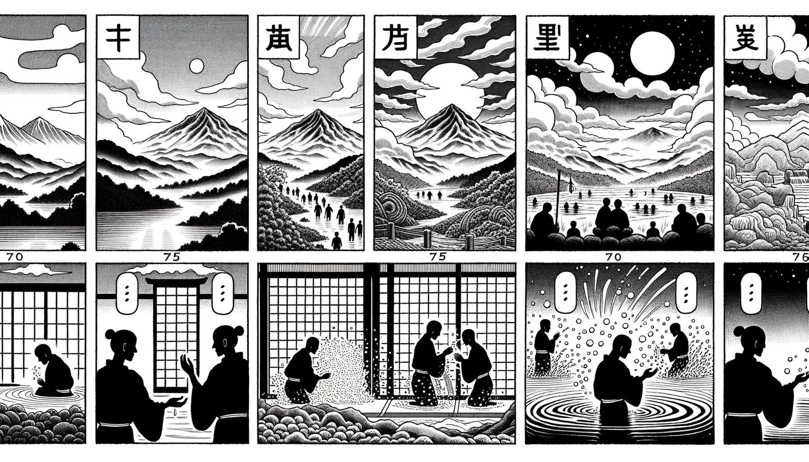

七十五巻 巻一覧
正法眼藏第50 洗面
本紹介ページの導入・語彙・深掘り・クイズは tools/regen_volume_intro_from_corpus.py が OpenAI API で生成したものです（入力は当巻の原文からの短い抜粋のみ）。内容はモデル出力のため、重要箇所は必ず原文・教本と照合してください。
出典: https://shomonji.or.jp/zazen/doc/genzou.html
原文・現代語訳の全文は 全文ページを参照してください。
この巻の紹介（導入）
法華經に基づき、身を油で塗り、澡浴し、新しい清らかな衣を着ることは、内外共に清らかであることを示す。
身心を清めることは仏法の基本であり、愚人はその真意を理解していない。
語彙の足場
- 法華經：仏教の重要な経典の一つで、法華経の教えを中心に展開される。
- 澡浴：身体を洗い清める行為で、仏教においては身心の清浄を象徴する。
- 菩薩：仏教において、他者を救うために修行を続ける存在。
- 香油：身体を清めるために用いる香りのある油で、仏教儀式において重要な役割を果たす。
- 手巾：洗面や澡浴の際に使用する布で、清浄を保つための重要な道具。
原文（要点の抜粋）
当巻の冒頭付近からの短い抜粋です。長い引用は載せていません。 全文は全文ページを参照してください。出典はリポジトリ内 doc/正法眼蔵.txt です。原文の参照元: https://shomonji.or.jp/zazen/doc/genzou.html
法華經云、以油塗身、澡浴塵穢、著新淨衣、内外倶淨（油を以て身に塗り、塵穢を澡浴し、新淨の衣を著し、内外倶に淨らかなり）。
いはゆるこの法は、如來まさに法華會上にして、四安樂行の行人のためにときましますところなり。餘會の説にひとしからず、餘經におなじかるべからず。しかあれば、身心を澡浴して香油をぬり、塵穢をのぞくは第一の佛法なり。新淨の衣を著する、ひとつの淨法なり。塵穢を澡浴し、香油を身に塗するに、内外倶淨なるべし。内外倶淨とき、依報正報、淸淨なり。
しかあるに、佛法をきかず、佛道を參せざる愚人いはく、澡浴はわづかにみのはだへをすすぐといへども、身内に五臟六腑あり。かれらを一一に澡浴せざらんは、淸淨なるべからず。しかあれば、あながちに身表を澡浴すべからず。かくのごとくいふともがらは、佛法いまだしらず、きかず、いまだ正師にあはず、佛祖の兒孫にあはざるなり。
しばらくかくのごとくの邪見のともがらのことばをなげすてて、佛祖の正法を參學すべし。いはゆる諸法の邊際いまだ決斷せず、諸大の内外また不可得なり。かるがゆゑに、身心の内外また不可得なり。しかあれども、最後身の菩薩、すでにいまし道場に坐し、成道せんとするとき、まづ袈裟を洗浣し、つぎに身心を澡浴す。これ三世十方の諸佛の威儀なり。最後身の菩薩と餘類と、諸事みなおなじからず。その功徳智慧、身心莊嚴、みな最尊最上なり。澡浴洗浣の法もまたかくのごとくなるべし。いはんや諸人の身心、その邊際、ときにしたがうてことなることあり。いはゆる一坐のとき、三千界みな坐斷せらるる。このときかくのごとくなりといへども、自他の測量にあらず、佛法の功徳なり。その身心量また五尺六尺にあらず。五尺六尺はさだまれる五尺六尺にあらざるゆゑなり。所在も、此界他界、盡界無盡界等の有邊無邊にあらず。遮裏是什麼所在、説細説麁のゆゑに。心量また思量分別のよくしるべきにあらず、不思量不分別のよくきはむべきにあらず。身心量かくのごとくなるがゆゑに、澡浴量もかくのごとし。この量を拈得して修證する、これ佛佛祖祖の護念するところなり。計我をさきとすべからず、計我を實とすべからず。しかあればすなはち、かくのごとく澡浴し、浣洗するに、身量心量を究盡して淸淨ならしむるなり。たとひ四大なりとも、たとひ五蘊なりとも、たとひ不壞性なりとも、澡浴するみな淸淨なることをうるなり。これすなはちただ水をきたしすすぎてのち、そのあとは淸淨なるとのみしるべきにあらず。水なにとして本淨ならん、本不淨ならん。本淨本不淨なりとも、來著のところをして淨不淨ならしむといはず。ただ佛祖の修證を保任するとき、用水洗浣、以水澡浴等の佛法つたはれり。これによりて修證するに、淨を超越し、不淨を透脱し、非淨非不淨を脱落するなり。
しかあればすなはち、いまだ染汚せざれども澡浴し、すでに大淸淨なるにも澡浴する法は、ひとり佛祖道のみに保任せり、外道のしるところにあらず。もし愚人のいふがごとくならば、五臟六腑を細塵に抹して卽空ならしめて、大海水をつくしてあらふとも、塵中なほあらはずは、いかでか淸淨ならん。空中をあらはずは、いかでか内外の淸淨を成就せん。愚夫また空を澡浴する法、いまだしらざるべし。空を拈來して空を澡浴し、空を拈來して身心を澡浴す。澡浴を如法に信受するもの、佛祖の修證を保任すべし。
いはゆる佛佛祖祖、嫡嫡正傳する正法には、澡浴をもちゐるに、身心内外、五臟六腑、依正二報、法界虛空の内外中間、たちまちに淸淨なり。香花をもちゐてきよむるとき、過去、現在、未來、因緣行業、たちまちに淸淨なり。
佛言、三沐三薰、身心淸淨。
しかあれば、身をきよめ心をきよむる法は、かならず一沐しては一薰し、かくのごとくあひつらなれて、三沐三薰して、禮佛し轉經し、坐禪し經行するなり。經行をはりてさらに端坐坐禪せんとするには、かならず洗足するといふ。足けがれ觸せるにあらざれども、佛祖の法、それかくのごとし。
それ三沐三薰すといふは、一沐とは一沐浴なり、通身みな沐浴す。しかうしてのち、つねのごとくして衣裳を著してのち、小爐に名香をたきにて、ふところのうちおよび袈裟坐處等に薰ずるなり。しかうしてのちまた沐浴してまた薰ず。かくのごとく三番するなり。これ如法の儀なり。このとき、六根六塵あらたにきたらざれども、淸淨の功徳ありて現前す。うたがふべきにあらず。三毒四倒いまだのぞこほらざれども、淸淨の功徳たちまちに現前するは佛法なり。たれか凡慮をもて測度せん、なにびとか凡眼をもて覰見せん。
たとへば、沈香をあらひきよむるとき、片片にをりてあらふべからず。塵塵に抹してあらふべからず。ただ擧體をあらひて淸淨をうるなり。佛法にかならず浣洗の法さだまれり。あるいは身をあらひ心をあらひ、足をあらひ面をあらひ、目をあらひくちをあらひ、大小二行をあらひ、手をあらひ、鉢盂をあらひ、袈裟をあらひ、頭をあらふ。これらみな三世の諸佛諸祖の正法なり。
佛法僧を供養したてまつらんとするには、もろもろの香をとりきたりては、まづみづからが兩手をあらひ、嗽口洗面して、きよきころもを著し、きよき盤に淨水をうけて、この香をあらひきよめて、しかうしてのちに佛法僧の境界には供養したてまつるなり。ねがはくは摩黎山の栴檀香を、阿那婆達池の八功徳水にてあらひて、三寶に供養したてまつらんことを。
洗面は西天竺國よりつたはれて、東震旦國に流布せり。諸部の律にあきらかなりといふとも、なほ佛祖の傳持、これ正嫡なるべし。數百歳の佛佛祖祖おこなひきたれるのみにあらず、億千萬劫の前後に流通せり。ただ垢膩をのぞくのみにあらず、佛祖の命脈なり。
図解（4コマ・AI生成）
教義の根拠は原文・出典に従い、漫画は比喩の補助に留めてください。

深掘り（読解の手掛かり）
- 身心の清浄は仏法の根本的な教えである。
- 洗面の儀式は、仏教の伝統において重要な位置を占めている。
- 愚人は身体の表面だけを清めることに留まり、内面の清浄を理解していない。
- 洗面の際には、特定の手順や道具が定められている。
確認（形成評価）
各設問の下の「採点」で正誤を表示します（ブラウザ内のみ。ログは送りません）。